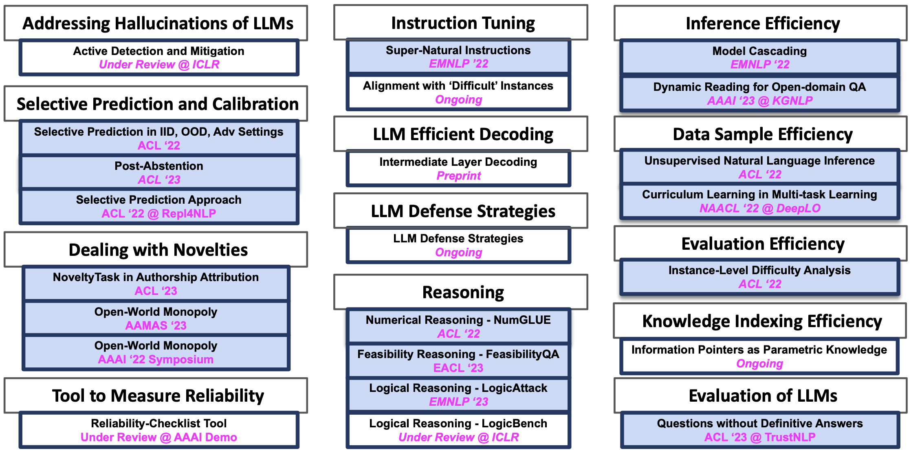

Neeraj Varshney
Ph.D. Candidate
Natural Language Processing (NLP)
2019 ‐ Spring 2024 (Expected)

I work in Natural Language Processing / Understanding, primarily towards addressing different Efficiency and Reliability aspects.
Specifically, I focus on problems such as Mitigating the Hallucinations of LLMs, Efficient LLM Decoding, Instruction Tuning, Question Answering, Inference Efficiency, Text Generation, LLM Defense Strategies, Selective Prediction, Training Sample Efficiency, Large Language Models, and Retrieval Augmented Inference.
I have published papers on these topics at premier AI and NLP conferences including ACL, EMNLP, EACL, NAACL, AAAI, and AAMAS.

News
Milestone: Crossed 650 citations.
My work on accelerating Large Language Models Inference (Accelerating LLaMA Inference by Enabling Intermediate Layer Decoding via Instruction Tuning with LITE) is available on arXiv.
GPSA Outstanding Research Award Fall 2023, ASU.
My paper On Developing Adversarial Attacks for Evaluating Logical Consistency of LLMs has been accepted to appear at EMNLP 2023.
My work on addressing the hallucination problem of Large Language Models (A Stitch in Time Saves Nine: Detecting and Mitigating Hallucinations of LLMs by Validating Low-Confidence Generation) is available on arXiv.
Presented three papers at ACL 2023
- Post-Abstention: Towards Reliably Re-Attempting the Abstained Instances in QA (Oral)
- A Unified Evaluation Framework for Novelty Detection and Accommodation in NLP with an Instantiation in Authorship Attribution
- Can NLP Models Identify, Distinguish, and Justify Questions that Don't have a Definitive Answer? (TrustNLP Workshop)
Received Graduate College Travel Award Q1 for ACL 2023 from ASU.
Started NLP Research Internship at Tencent AI, Bellevue.
Selected as Outstanding Reviewer for EACL 2023 (Question Answering Track).
My two papers got accepted to ACL 2023. One paper is on improving the "reliability of QA systems" and the other one on "addressing novelties in an NLP task". Will share more details soon.
My paper got accepted to TrustNLP workshop @ ACL 2023.
Successfully completed my PhD Prospectus Defense and Comprehensive exam.
Reviewed for ACL 2023 (Question Answering Track).
SCAI doctoral fellowship award from School of Computing and AI, ASU.
My paper "John is 50 years old, can his son be 65?" Evaluating NLP Models' Understanding of Feasibility got accepted to EACL 2023.
My paper "Methods and Mechanisms for Interactive Novelty Handling in Adversarial Environments" has been accepted to appear at the 22nd International Conference on Autonomous Agents and Multiagent Systems (AAMAS 2023).
Received Graduate College Travel Award FY23 Q3 for AAAI from ASU.
Selected for AAAI 2023 Student Scholarship.
Presented my EMNLP 2022 papers in-person in Abu Dhabi.
Reviewed for EACL 2023 (Question Answering Track).
My paper "Can Open-Domain QA Reader Utilize External Knowledge Efficiently like Humans?" has been accepted to appear at the AAAI'23 Workshop on Knowledge Augmented Methods for NLP.
Received ASU GPSA Travel Award for EMNLP 2022.
I am delighted to share that my Two papers have been accepted to appear at the EMNLP 2022 conference.
Received SACI Conference Award for EMNLP from ASU.
Received Graduate College Travel Award FY23 Q2 for EMNLP from ASU.
Crossed 50K views on my medium articles.
Presented Let the Model Decide its Curriculum for Multitask Learning at NAACL 2022 in Seattle.
Received Graduate College Travel Award 2022-23 Q1 from ASU.
Applied Scientist internship at Amazon Science under the mentorship of Alessandro Moschitti, Rik Koncel-Kedziorski, Siddhant Garg, Ivano Lauriola, Ankit Chadha.
My work Let the Model Decide its Curriculum for Multitask Learning has been accepted at DeepLo @NAACL 2022.
My work Benchmarking Generalization via In-Context Instructions on 1,600+ Language Tasks is on arXiv.
Received Spring 2022 ASU GPSA Travel Award.
Reviewed for Open-Domain Retrieval Under a Multi-Modal Setting workshop CVPR 2022.
Received Graduate College Travel Award Q4 from ASU.
My work Towards Improving Selective Prediction Ability of NLP Systems has been accepted at Repl4NLP @ACL 2022.
Received SCAI conference award.
My work ILDAE: Instance-Level Difficulty Analysis of Evaluation Data has been accepted at ACL 2022.
My work NumGLUE: A Suite of Fundamental yet Challenging Mathematical Reasoning Tasks has been accepted at ACL 2022.
My work Unsupervised Natural Language Inference Using PHL Triplet Generation has been accepted at ACL 2022.
My work Investigating Selective Prediction Approaches Across Several Tasks in IID, OOD, and Adversarial Settings has been accepted at ACL 2022.
My work An Architecture for Novelty Handling in a Multi-Agent Stochastic Environment: Case Study in Open-World Monopoly has been accepted at Designing Artificial Intelligence for Open Worlds spring symposium @ AAAI 2022.
Mentered class projects for Natural Language Processing course at ASU.
Started Computer Science Ph.D. program at Arizona State Univeristy.
Joined Microsoft India as a Software Developer.
Completed B.E. in Computer Science with Distinction (GPA: 9.11) at Birla Institute of Technology & Science, Pilani.
Internship at Microsoft.
Internship at Samsung R&D Institute.
Internship at Valuefirst Digital Media.
Started B.E. in Computer Science at Birla Institute of Technology & Science, Pilani.